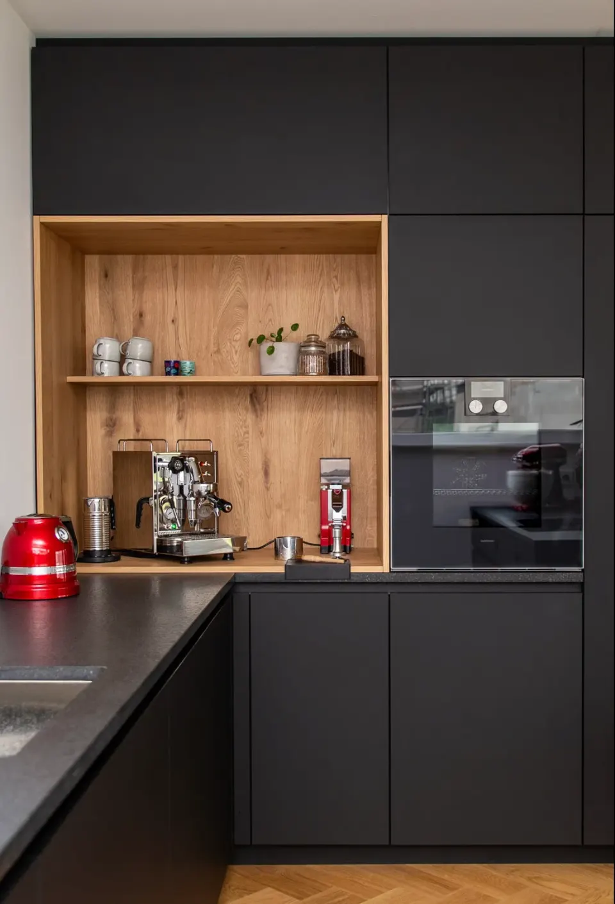
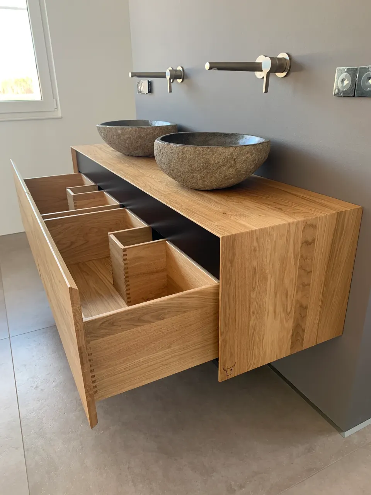

Küchen, Bäder und Möbel nach Maß – aus unserer Werkstatt in Landau.
Wir sind Marius Landgraf und Yannik Mosthaf, zwei Tischlermeister. Vom 3D-Aufmaß bis zur Montage bekommt ihr bei uns alles aus einer Hand.
Lieber direkt sprechen? 06341 7005116

- MeisterbetriebZwei Tischlermeister
- Seit 2019Selbstständig in Landau
- SüdpfalzUnd auf Anfrage überregional
Was wir für euch bauen
Wir sind spezialisiert auf Massivholz. Standardteile wie Küchenkorpusse kommen von regionalen Partnern – alles Individuelle entsteht in unseren eigenen Hallen.
Küchen nach Maß
Grifflos, mit Kochinsel oder Kaffeebar – geplant per 3D-Aufmaß und gebaut für genau euren Raum.
Projekte ansehen →Badmöbel & Waschtische
Waschtische aus Massivholz mit gezinkten Schubkästen – vom Gäste-WC bis zum Doppelwaschtisch.
Projekte ansehen →Möbel & Massivholztische
Esstische, Deckplatten, Holzfußgestelle und Einzelstücke, gefertigt in unserer Werkstatt.
Projekte ansehen →Innenausbau
Treppen, Garderoben, Einbauschränke, Türen und Parkett – alles aus einer Hand.
Projekte ansehen →Ausgewählte Projekte

Badmöbel & Waschtische
Waschtische aus Eiche massiv – vom Gäste-WC bis zum Doppelwaschtisch.

Treppe, Garderobe & Schrank
Faltwerktreppe aus Eiche, Garderobenbank, Einbauschrank und Spiegel.

Sideboard & Esstisch
Ein Sideboard auf alten Turnbock-Beinen und ein Esstisch aus Eiche massiv.
So läuft ein Projekt bei uns
Durch das 3D-Aufmaß und die CAD-Planung wisst ihr vorher genau, was ihr bekommt. Und wir sind bei der Montage schnell wieder raus.
3D-Aufmaß
Wir erfassen euren Raum millimetergenau – mit allen Längen, Nischen und Winkeln.
CAD-Planung
Aus dem Aufmaß entsteht ein virtueller Raum, den wir gemeinsam mit euch einrichten.
Produktion
Massivholz und alles Individuelle fertigen wir selbst, Standardteile kommen von regionalen Partnern.
Montage
Wir bauen bei euch ein – sauber, schnell und persönlich.

„Arbeit macht Bock.“
Marius und Yannik haben sich 2019 noch während der Meisterschule selbstständig gemacht – zuerst als Parkettleger, seit dem Meistertitel 2020 als Schreinerei. Was die beiden verbindet: die gleichen Vorstellungen von Qualität, Arbeitsweise und Kundenkontakt.
Mehr über unsHabt ihr ein Projekt im Kopf?
Erzählt uns kurz, was ihr vorhabt. Wir melden uns persönlich und kommen zum Aufmaß zu euch.